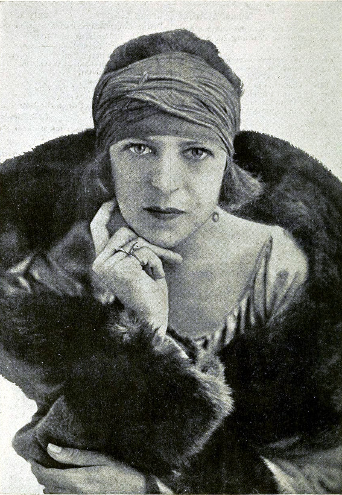

Suzanne Lenglen
The greatest women's tennis player from amateur era

Lenglen wearing her signature bandeau and distinctive large coat
Below we have the timeline of Suzanne's life:
- 1899 - Born in Paris
- 1910 - After three months that she won her first racket from a toy shop at 11 years, she entered a local high-level tournament in Chantilly. In the singles handicap event, Lenglen won four rounds and finished in second place
- 1914 - She won the singles final against Germaine Golding for her first major title on the World Hard Court Championships, one of the major tournaments recognised by the International Lawn Tennis Federation at the time
- 1919 - After she won the match against Lambert Chambers in the single final, she takes her first Wimbledon title.
- 1920At the Olympics, Lenglen won two gold medals and one bronze medal for France.
- 1921 - With more than eight thousand people in attendance, Mallory took a 2–0 lead in the first set before Lenglen began coughing in the third game. After losing the first set, Lenglen retired from the match two points into the second set for her only singles loss after World War I.
- 1923 - Lenglen entered more events and won more titles in 1923 than any other year. She won all 16 of the singles events she entered, as well as 13 of 14 doubles events, and 16 of 18 mixed doubles events.
- 1926 - In what was called the Match of the Century, Lenglen defeated Wills in straight sets.
- 1926 - 1927 - United States tour.
- 1927 - In the program for the United States professional tour, she stated, "In the twelve years I have been champion I have earned literally millions of francs for tennis ... And in my whole lifetime I have not earned $5,000 – not one cent of that by my specialty, my life study – tennis ... I am twenty-seven and not wealthy – should I embark on any other career and leave the one for which I have what people call genius? Or should I smile at the prospect of actual poverty and continue to earn a fortune – for whom? Lenglen did not participate in any other professional tours after 1927
- 1933 - Lenglen returned to tennis as a coach, serving as the director of a school on the grounds of Stade Roland Garros
- 1938 - Lenglen became the inaugural director of the French National Tennis School in Paris. Shortly after this appointment, however, Lenglen became severely fatigued while teaching at the school and needed to receive a blood transfusion.
- 1938 - Died three weeks after she became ill.
"Her opponents were afraid of her because she was like a lion on the court, it was not usual for a woman to hit the ball so hard. She was very different from the other ladies, she was very free. "
-- Patrick Clastres, sports historian at Sorbonne University in Paris
If you have time, you should read more about this incredible woman on her Wikipedia entry